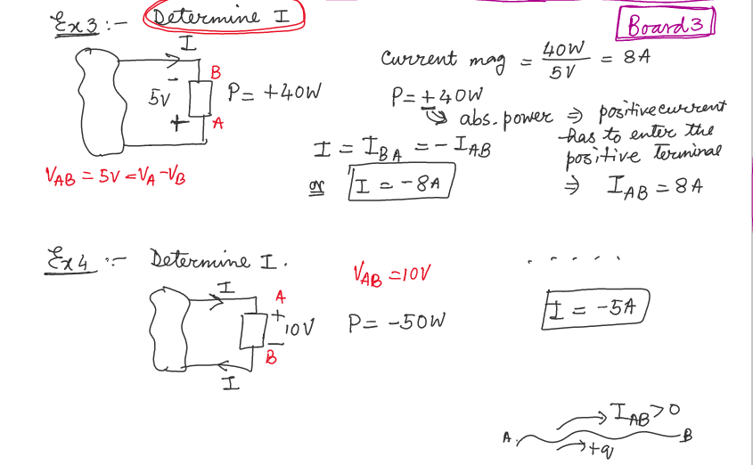
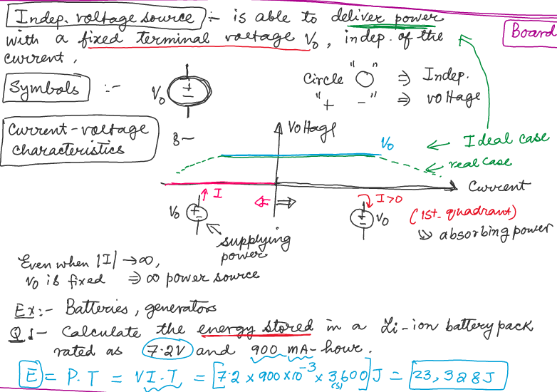
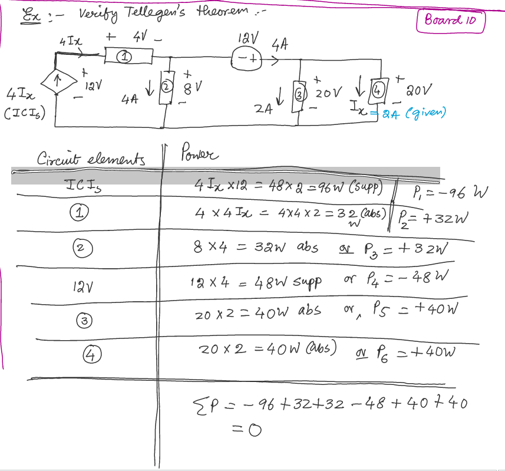

Sign Convention for Power
In this diagram:
- A and B (similarly A' and B') is voltage terminal (+ and -)
- Two elements are translating power each other
- the current leaves from is high energy (voltage) carrier
- the current leaves from is low energy (voltage) carrier
Power Absorbtion: positve current enters the postive voltage terminal and leaves the negative voltage terminal
Generating (or supplying) power: positve current leaves the positve voltage terminal and enters the negative voltage terminal
Passive sign convention for power
- Power absorbtion is represented by positve sign
- Power supply is represented by negative sign
e.g:
- an elemetn is supplying 5 W power power for the element is -5 W
- an elemetn is absorbing 7 W power power for the element is +7 W
Remark:
- If use absorb / supply to describe the power of an element, don't use sign convention on number
- If use sign convention, vice versa
Examples
Example 1 and 2

For Ex 1, power is negaitve because 4A current is leaving the positve terminal (element generates and supplys power, which gives more energy to current
Remark:
- Voltage doesn't always go from - to +, it depends on what the element is doing
- No voltage difference / power or energy supplied (generated), no current
Example 3 and 4

For current, the + and - indicate the direction of current flow
Tellegen's Theorem
Conserveration of power in electrical networks
or, using passive sign convention (abs power: ; supply power: ):
Examples
Circuit Elements
Acitve Elements
- capable of generating electrical energy
Remark :
- Active Elements not always generate electrical energy (depends on circuit)
Voltage Source
- Indep. voltage source
- dependent (controlled) voltage source
Current Source
- Indep. current source
- dep. or controlled current source
Passive Elements
- can never generate electrical energy. They can absorb (or disspiate) power
- temporarily store energy that has been given to them
Independent Voltage Source
- deliver power with a fixed terminal voltage , indep. of the current

Independent Current Source
- able to deliver power with a specificed current

Dependent or Controlled Source
Unidirectional:
- can change the cause but not effect
- non-reversible direction
Electrical Domain
4 options
| Option | Characteristic |
|---|---|
| VCVS | Voltage controlled voltage source |
| VCIS | Voltage controlled current source |
| ICVS | Current controlled voltage source |
| ICIS | Current controlled current source |
VCVS

VCIS, ICVS, ICIS
Examples
